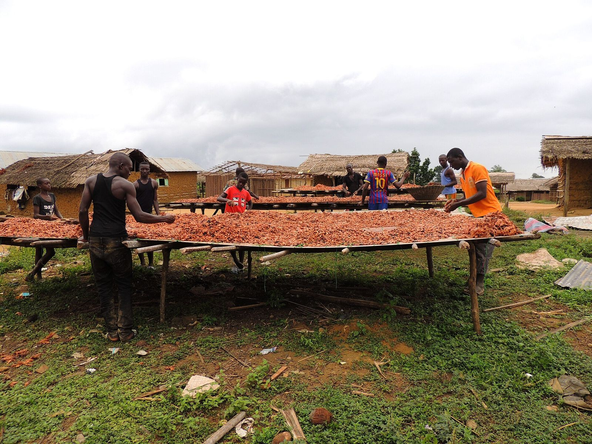

Promotionnelle · 4 min 00 · voix masculine
Votre filière, prouvée
Cacao, palme, caoutchouc : pourquoi une base de preuves ouvre le marché, et ce que nous ne promettons jamais.
GEC-CI prépare les sociétés coopératives de cacao au standard d'agriculture durable v1.4 : registres, géolocalisation, prime versée membre par membre, contrôle interne et audit blanc indépendant. Nous préparons, l'organisme certificateur décide.
Nous vendons ce qui ouvre réellement votre marché : un système de preuves que l'auditeur peut vérifier, pas une promesse de date.
Voix off française, musique, texte affiché à l'écran : à partager avec votre conseil d'administration et vos équipes. Toutes les vidéos GEC-CI PRO
Cacao, palme, caoutchouc : pourquoi une base de preuves ouvre le marché, et ce que nous ne promettons jamais.
Les 144 exigences Rainforest Alliance, le circuit de validation, le code de chaque pièce et les deux dates à contrôler.
Données, exigences officielles, audit blanc indépendant, paiement, promesses : comparez avant de signer.
Les dix étapes, votre profil, le paiement à l'avancement, les trois filières et nos zones.

Cahiers, téléphones, classeurs : la pièce existe peut-être, mais personne ne la retrouve devant l'auditeur.
Poids de la coopérative, du Système national de traçabilité et de la plateforme de certification : chaque écart devient une non-conformité.
L'auditeur demande la part versée à chaque membre, avec sa preuve. Une liste globale ne suffit pas.
Sans audit blanc indépendant, les non-conformités apparaissent pendant l'audit, quand la campagne est engagée.
La même méthode pour les trois filières ; seul le référentiel change.
Reformulation GEC-CI de la liste de contrôle « groupe de petites exploitations ». Le texte officiel en anglais fait foi.
Base : obligatoire dès le premier audit · Particulière : si la situation existe · Amélioration continue : progrès mesuré dans la durée · RDUE : alignée sur le règlement européen sur la déforestation.
Répondez honnêtement : rien n'est enregistré ni envoyé. Le résultat donne vos priorités ; il ne remplace pas le diagnostic sur place.
Registres incomplets, pas de responsable du système interne.
Organisation correcte, l'acheteur attend un premier audit.

Rainforest Alliance v1.4 ou RSPO 2024 : les écarts à combler.

Non-conformités majeures, certificat suspendu, conflit interne.
Cohérence des données entre sections, magasins et ponts-bascules.

Traçabilité, bilan massique, dossiers d'origine pour le règlement européen.
Personnages : illustrations créées pour GEC-CI, ils ne représentent pas des personnes réelles.
Personnages : illustrations créées pour GEC-CI, ils ne représentent pas des personnes réelles.
Facture normalisée électronique pour chaque étape. Le prix se calcule après le diagnostic, lot par lot. Le solde peut être réglé par l'acheteur sur la part coopérative de la prime, avec une convention signée, jamais sur la part des membres.
Vos données restent à vous : elles sont hébergées dans votre espace et vous sont restituées en fin de contrat.
144 exigences, preuves codées, membres, parcelles, prime, inspections, tableaux de bord ; base de données en ligne sécurisée.
Ouvrir la plateformeLe manuel opérationnel de la mission : procédures, registres, check-lists, audit blanc.
Lire le manuelPack de formation de 4 jours sur le standard v1.4 : délégués, magasiniers, RSI, gérants, inspecteurs internes.
Demander une sessionLe système de gestion du cabinet : clients, contrats, missions, preuves, validations humaines, incidents, facturation et journal d'audit. Un seul compte pour toutes les plateformes GEC-CI ; droits vérifiés par le serveur.
Ouvrir IA GECI
GEC-CI est dirigé par Mr SIDIBE ABDOULAYE, Président-Directeur Général, ATN RA et formateur-auditeur ISO 9001, 14001 et 45001. La direction suit chaque mission jusqu'à la décision écrite.


Portraits de bureau : décors mis en scène numériquement.
| Premier contact | Réponse le jour même, rendez-vous sous 7 jours |
| Diagnostic | Rapport sous 10 jours ouvrés après la visite |
| Vos questions | Réponse sous 48 heures ouvrées |
| Comité de pilotage | Chaque mois, compte rendu sous 5 jours ouvrés |
| Données transmises | Retour écrit sous 5 jours ouvrés |
| Audit blanc | Rapport sous 7 jours ouvrés |
Avec les 144 exigences officielles. Vous repartez avec vos trois priorités.
+225 05 55 49 45 94WhatsApp+225 07 57 88 13 49